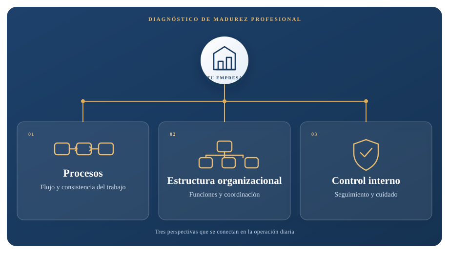
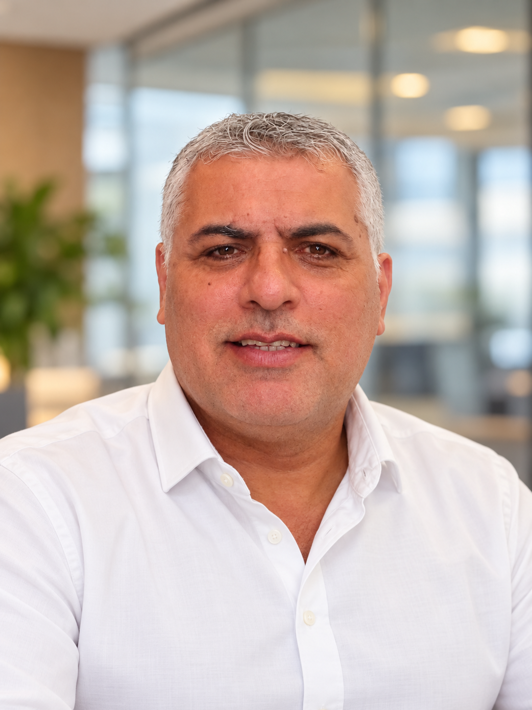
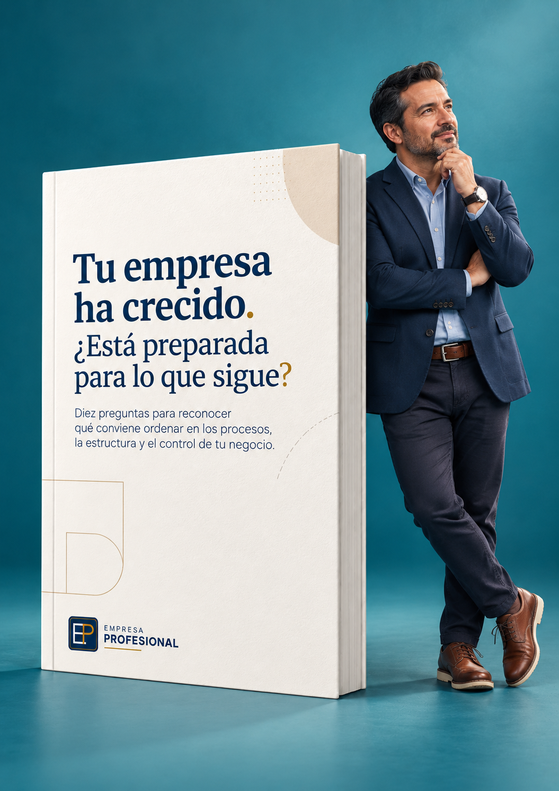

Diagnóstico de Madurez Profesional
Descubre qué necesita ordenar tu empresa para seguir creciendo
Una mirada estructurada a los procesos, la organización y el control de tu empresa, pensada para PYMES en crecimiento de 15 a 150 empleados.
Preguntas que surgen cuando la empresa crece
¿Quién debe tomar cada decisión y hasta dónde?
¿Por qué el mismo trabajo se hace distinto según quién lo realice?
¿Cómo coordinamos las áreas para evitar retrasos y retrabajos?
¿Qué responsabilidades o puestos necesitamos aclarar?
¿Cómo damos seguimiento a metas, acuerdos y pendientes?
¿Estamos preparados para crecer sin perder el control de la operación?
¿Qué revisa el diagnóstico?
Tres frentes para entender cómo opera tu empresa.


Tu consultor
Soy Carlos H. Cuevas.
Tengo más de 10 años de experiencia en consultoría organizacional. Me especializo en PYMES en crecimiento, con equipos de 15 a 150 empleados.
Cuento con especialización y certificación en capacitación laboral para el cumplimiento de las metas de la organización.

Un primer paso, sin costo
Tu empresa ha crecido. ¿Qué necesita ordenar ahora?
Descarga el ebook y explora diez preguntas sobre los retos que pueden aparecer cuando una empresa crece. Incluye un ejercicio para elegir una situación y organizar lo que sabes antes de decidir qué cambiar.
- Reflexiona sobre procesos, estructura y control.
- Identifica una situación concreta que quieras explorar.
- Distingue hechos, percepciones e hipótesis.
PDF gratuito. Después, si quieres conversar sobre tu empresa, contáctanos por WhatsApp o correo.
El siguiente paso
Conoce el Diagnóstico de Madurez Profesional.
Conversemos sobre el contexto de tu empresa y aclaremos qué revisa el diagnóstico para valorar si es adecuado para lo que necesitas.